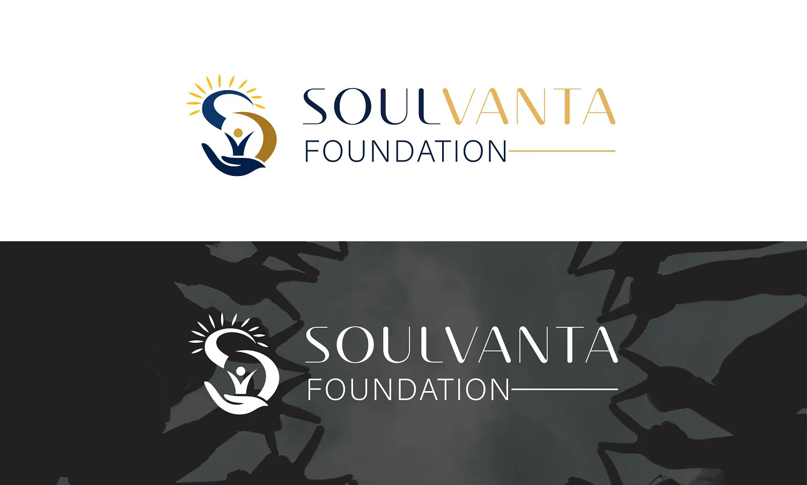

Logo & Brand Identity
A refined identity direction for Soulvanta Foundation, balancing an elegant wordmark with a meaningful emblem and adaptable presentation.

Project Overview
A refined identity direction for Soulvanta Foundation, balancing an elegant wordmark with a meaningful emblem and adaptable presentation. CreXstudio focused on a clean visual system, strong composition and a presentation that works across digital touchpoints.
Logo design, identity direction and presentation. The project was shaped with attention to detail, responsiveness and a premium visual finish.
START A PROJECT →More from CreXstudio